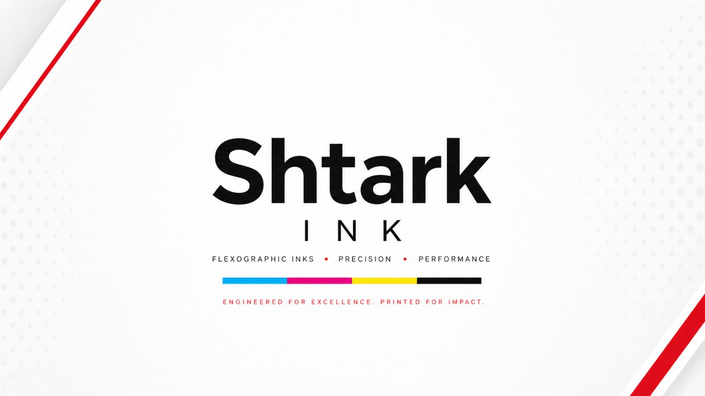
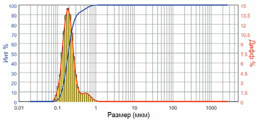
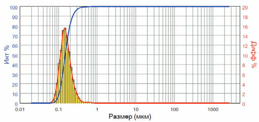
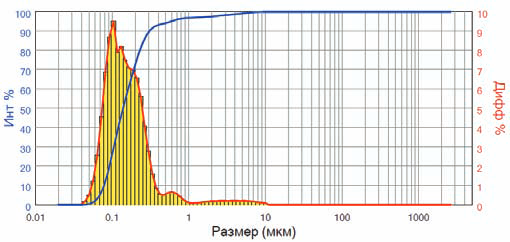
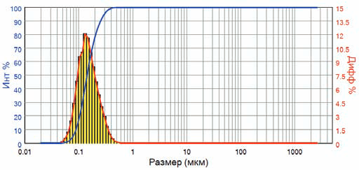
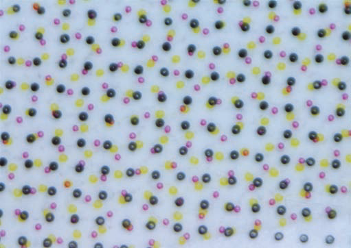
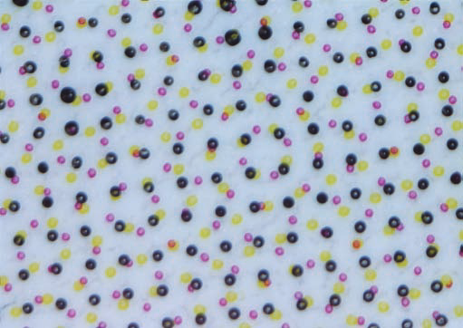

Спирторастворимые краски серии UNI: тривиальное название, оригинальные свойства

«…Универсальная спирторастворимая серия красок на нитроцеллюлозно-полиуретановой основе, рекомендованная для межслойной и поверхностной печати на широком спектре запечатываемых материалов…» — это «рабочая лошадка» большинства средних и крупных производителей рулонной гибкой упаковки, печатающих флексографским способом.
С использованием данной серии красок производятся комбинированные материалы, применяемые для упаковки бакалейной продукции, сыпучих и молочных продуктов (сырки, творог, творожная масса), кондитерских изделий, замороженных продуктов и снеков. Ассортимент запечатываемых материалов и ламинационных структур, произведённых с использованием бессольвентной или сольвентной ламинации, включает сочетания плёнок БОПП + БОПП, БОПП + КАСТ БОПП, БОПП + ПВД, БОПП + БОППмет, БОПП + БОППмет + ПВД.
Данная серия красок есть в ассортименте всех производителей и поставщиков спирторастворимых печатных красок на территории РФ и СНГ. Мы задались вопросом: можно ли создать продукт, который по своим технико-печатным характеристикам и, что немаловажно, экономической составляющей, будет превосходить имеющиеся на рынке продукты?
После тщательного анализа доступной технической документации аналогичных серий красок, анализа жидких образцов и сбора информации от потребителей мы обозначили характеристики, которые постарались улучшить при разработке красок серии UNI, производимой компанией «Штарк Инк». Об этой работе и пойдёт речь далее.
Высокая пигментация и стабильность колористических характеристик
Спирторастворимые печатные краски представляют собой дисперсные системы с большим избытком свободной поверхностной энергии, что обусловливает их термодинамическую неустойчивость. Такие системы, согласно законам термодинамики, стремятся самопроизвольно прийти к состоянию с минимальным запасом свободной энергии. Эти процессы приводят к образованию агломератов частиц органических и неорганических пигментов, что влияет на колористические характеристики нанесённого покрытия.
Процессы образования надмолекулярных структур и электростатические взаимодействия между компонентами красочной системы приводят к тому, что готовые краски в той или иной степени обладают тиксотропностью и склонны увеличивать вязкость в процессе хранения. Изменение вязкости ведёт к различному проценту ввода растворителя для достижения печатной вязкости и, как следствие, к различным колористическим характеристикам.
Понимая эти проблемы, на первом этапе разработки основной упор был сделан на получение пигментных концентратов с максимальным процентом ввода пигмента, стабильными реологическими характеристиками и минимальной тиксотропностью. Это стало возможным благодаря тщательному подбору органических и неорганических пигментов и комплексу смачивающих и диспергирующих добавок.
Для управления процессом тонкого измельчения пигментов и обеспечения стабильного качества распределение частиц по размеру контролируется лазерным дифрактометром. Колористические характеристики проходят двухстадийный контроль, и согласно утверждённым нормам цветовое отличие не превышает 1,5 единицы. Распределение частиц характеризуется узким диапазоном с максимальным размером, не превышающим 2 мкм.
Рис. 1 · Распределение частиц пигмента по размерам, мкм




Стабильная работа краски в длинном тираже. «Чистая» печать растровых элементов
«Грязная» печать — один из самых распространённых дефектов, с которым сталкиваются производители гибкой упаковки. Чаще всего он проявляется в виде крупных сгустков краски, которые накапливаются на растровых элементах печатной формы, а затем хаотично переносятся на запечатываемый материал. Сюда же относятся неравномерные края растровых точек, образование красочных мостиков между растровыми элементами и непропечатка растра в 5%-ной области и ниже.
Все эти проблемы в основном связаны с балансом органических растворителей в составе красочной смеси. В процессе разработки серии UNI особое внимание мы уделили устранению этих дефектов и определили, какими свойствами должна обладать входящая в состав смесь растворителей:
- медленная скорость высыхания, при этом «тяжёлые» растворители не должны оставаться в красочной плёнке — для предотвращения проблем на стадии ламинации;
- отличная динамическая рерастворимость связующих, входящих в состав красочной смеси;
- быть «стабильными», то есть обладать неизменными характеристиками в течение длительных тиражей.
Стабильность работы краски оценивалась на изображениях растровых элементов в начале тиража и после 7 часов печати — при длине тиража 120 000 погонных метров и скорости печати 250–300 м/мин.
Отличные ламинационные характеристики. Расширение «универсальности»
Как следует из описания серии UNI, одно из основных связующих в её составе — полиуретановая смола (ПУ). Полиуретановые смолы представляют собой сложные продукты взаимодействия алифатических и/или ароматических изоцианатов с полифункциональными гидроксилсодержащими соединениями, поставляемыми в среде органических растворителей. Данные смолы обеспечивают требуемые адгезионные и ламинационные характеристики красочного слоя и определяют область применения краски.
Понимая, что входящие в состав ПУ-смолы определяют ключевые свойства серии, мы очень ответственно подошли к выбору этого вида сырья. В процессе тестирования мы столкнулись с тем, что часть смол не обеспечивала требуемые технические характеристики, а одобренные продукты вносили значительный вклад в себестоимость готовой продукции и делали произведённую краску неконкурентоспособной. Поэтому мы решили подойти к вопросу с другой стороны.
Имея партнёрские отношения с компанией «Штарк Кемикалз» — лидером рынка по производству бессольвентных и сольвентных полиуретановых клеевых систем для гибкой упаковки, — мы запустили совместный проект по разработке данных видов смол. Опираясь на их научный потенциал и высокие компетенции в области химии полиуретановых систем, в течение года нам удалось создать и внедрить в производство систему ПУ-смол, отвечающих нашим требованиям.
Результаты превзошли все наши ожидания — краски обладали отличными технико-печатными характеристиками, а полученные ламинационные структуры на основе BOPP — превосходными показателями по расслоению. Нам удалось расширить функциональность серии и рекомендовать её для производства простых ламинационных структур на основе химически обработанного PET.
Рис. 2 · Контроль печати растровых элементов · Y–8% · M–5,5% · K–6,5%


Стабильность работы краски серии UNI: растровые элементы в начале и после 7 часов печати (тираж 120 000 п.м., скорость 250–300 м/мин) — без «грязной» печати и заплывания точки.
Белая краска
Проделав описанную выше работу, мы уже понимали, какую систему смол, функциональных добавок и какой баланс растворителей необходимо «заложить» в белую краску серии UNI. Оставалось решить задачу по достижению кроющей способности, превышающей имеющиеся у нас образцы красок конкурентов. С этой целью мы протестировали несколько десятков образцов диоксида титана и определили требуемые марки с узким распределением частиц по размеру, что обеспечивает как высокие кроющие характеристики (OP > 50 %), так и низкую абразивность.
Рис. 3 · Распределение частиц пигмента белой краски, мкм

В качестве заключения
Смогли ли мы выполнить поставленную перед собой задачу? Решать вам. Бесплатные образцы красок для проведения промышленного тестирования предоставляются по запросу.
Полная версия статьи опубликована в журнале «Флексо Плюс» №4-2025. По вопросам тестирования серии UNI на вашем оборудовании — свяжитесь с нашими технологами.
Связаться с нами →